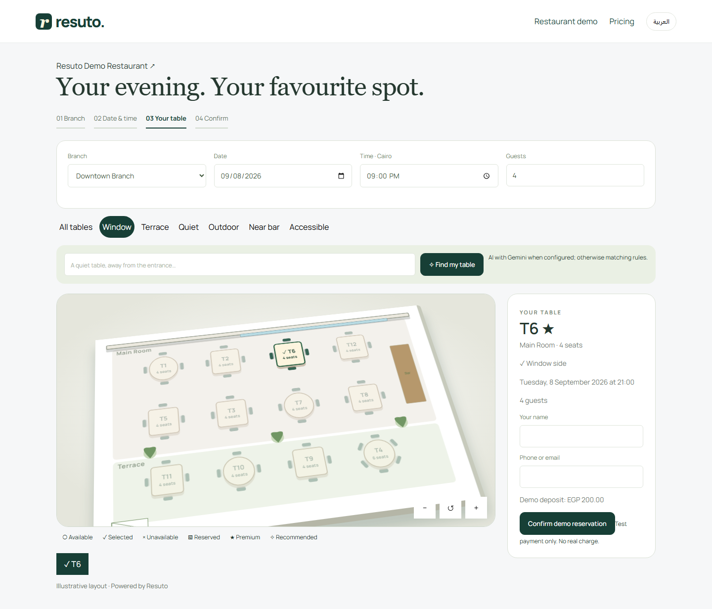
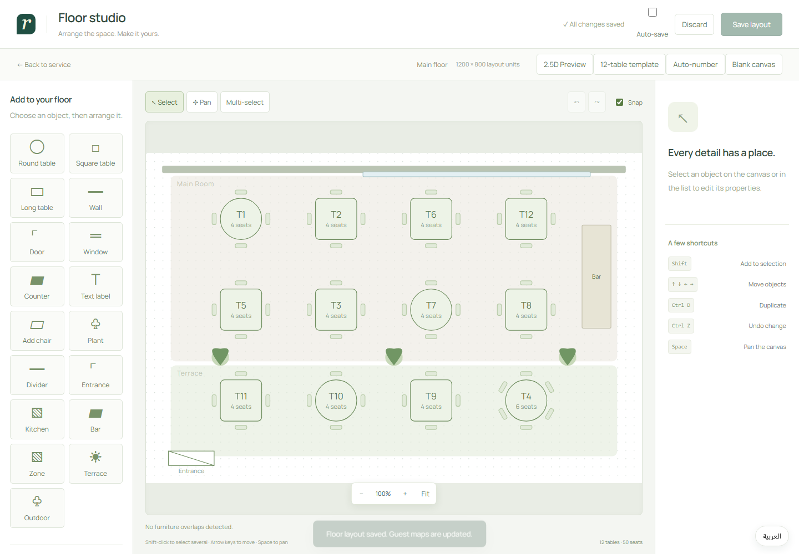
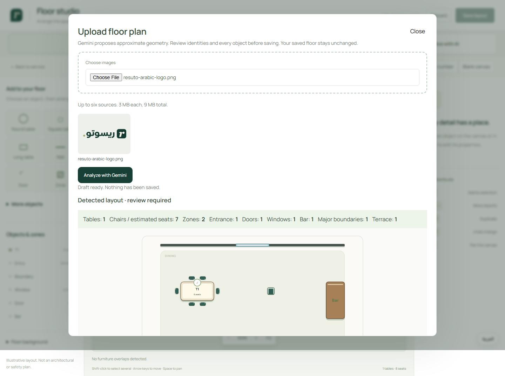

خطة جاهزة للدفاع عن المشروع أمام لجنة التحكيم: المشكلة، الأثر، الابتكار، التقنية، الجدوى، التسعير في مصر والسعودية، العائد على الاستثمار، الاستدامة، وسيناريو عرض لا يتجاوز 6 دقائق.
وثيقة داخلية للعرض والتحكيم. الأرقام المالية نماذج تقديرية شفافة وليست نتائج تشغيلية مثبتة بعد.
المطعم الصغير والمتوسط يدير الحجز والطاولات والطلبات والمطبخ والتحصيل غالبًا عبر أدوات منفصلة. ينتج عن ذلك إدخال متكرر، أخطاء، بطء، وبيانات لا تتحول إلى قرارات. Resuto يجمع رحلة الضيف وفريق التشغيل في واجهة عربية/إنجليزية واحدة، ثم يستخدم Gemini لتسريع إدخال القائمة والمخطط واقتراح التحسينات — مع بقاء القرار النهائي للمدير.
حجز، طاولات، QR، طلب، مطبخ، تقسيم فاتورة، وإدارة.
مصر للاختبار السريع، ثم السعودية بعد جاهزية الامتثال.
تجربة مدفوعة بقياسات قبل/بعد في 3 مطاعم.
| جاهز للعرض | يحتاج إثباتًا أو إكمالًا |
|---|---|
| تدفق تشغيلي مترابط، واجهات عربية/إنجليزية، إدارة الطاولات، تجربة الضيف، ذكاء Gemini، اختبارات آلية ومسار نشر. | دراسة مستخدمين موثقة، تجربة ميدانية وKPIs، تعدد المطاعم الحقيقي، فوترة إلكترونية محلية، دفع حي، مراقبة ونسخ احتياطي إنتاجي. |
| المعيار | الوزن | ما نعرضه | الحالة |
|---|---|---|---|
| تعريف المشكلة | 10 | شخصية مستخدم + رحلة متفرقة + فرضيات قابلة للقياس | جزئي |
| الأثر وSDG | 15 | SDG 8 ومؤشرات وقت/خطأ/هدر/إنتاجية | بحاجة baseline |
| الابتكار | 10 | ذكاء اصطناعي مساعد داخل سير العمل، لا chatbot منفصل | قوي |
| جودة الحل وUX | 10 | رحلة حية عربية RTL من الحجز حتى الدفع | قوي |
| التنفيذ التقني | 15 | معمارية، تخزين، أمن، idempotency، اختبارات | قوي |
| الجدوى والتنفيذ | 10 | خطة 0–90 يومًا ومخاطر واضحة | متوسط |
| ROI ونموذج العمل | 15 | أسعار محلية + 3 سيناريوهات ROI + CAC/LTV قابلان للقياس | نموذج لا دليل |
| الاستدامة والاستمرارية | 10 | خارطة طريق، ملكية بيانات، دعم وتشغيل | خطة |
| العرض والتواصل | 5 | سيناريو 6 دقائق + Demo احتياطي | جاهز بهذه الوثيقة |
يشمل Bonus استخدام Google وتقيد العرض بالوقت. ليس ضمانًا؛ هو تقدير تحضيري مبني على الحالة الحالية.
رتّب الإجابات بهذا التسلسل: الأثر → ROI → التقنية → الاستدامة → الجدوى. وهو ترتيب Tie-break المعلن في المعايير.
مدير مطعم مستقل أو سلسلة صغيرة، 1–3 فروع، فريق تشغيل صغير، ضغط مرتفع في ساعات الذروة، ويحتاج رؤية لحظية دون نظام مؤسسي معقد.
أن يعرف من حجز، أين سيجلس، ماذا طلب، أين الطلب في المطبخ، ماذا دُفع، وما الذي يحتاج تحسينًا.
| الفرضية | الدليل المطلوب | حد النجاح الأولي |
|---|---|---|
| التجزؤ يستهلك وقت الفريق | 10 مقابلات + قياس ساعات الإدخال/التسوية | ≥ 60% يذكرون أداتين أو أكثر |
| الرحلة الموحدة تقلل الخطأ | معدل أخطاء الطلب قبل/بعد | تحسن ≥ 10% |
| العميل مستعد للدفع | 3 خطابات نوايا أو اشتراك تجريبي | ≥ مطعمين مدفوعين |
Resuto يستهدف رفع إنتاجية المنشآت الصغيرة وتحسين جودة التشغيل عبر تقليل الأعمال اليدوية والأخطاء، وتسريع الخدمة، وتحويل البيانات إلى قرارات. الارتباط ثانويًا بـ SDG 12 عند قياس الهدر والمخزون.
| المؤشر | التعريف | طريقة القياس | هدف 30 يومًا |
|---|---|---|---|
| زمن دورة الطلب | من تأكيد الطلب حتى جاهزيته | أحداث زمنية داخل النظام | خفض 10% |
| معدل خطأ الطلب | الطلبات المعادة/المصححة ÷ الكل | سبب تعديل/إلغاء إلزامي | خفض 10% |
| زمن تسوية الفاتورة | من طلب الحساب حتى الإغلاق | timestamps للدفع | خفض 15% |
| ساعات الإدارة اليدوية | إدخال قائمة، مصالحة، تقارير | دفتر أسبوعي + time log | توفير 8 ساعات/شهر |
| رضا المستخدم | CSAT للفريق والضيف | استبيان 1–5 | ≥ 4.0/5 |
| الهدر/نفاد المخزون | قيمة الهدر والأصناف غير المتاحة | سجل أسبوعي | إنشاء baseline أولًا |

الحجز يدخل مباشرة إلى نفس نموذج التشغيل بدل أن يبقى في قناة منفصلة.

مخطط الطابق يربط السعة والطاولة والحالة مع رحلة الضيف.
تحويل صور القائمة أو مخطط الطاولات إلى مسودة منظمة بدل الإدخال اليدوي الكامل.
النتيجة لا تغيّر بيانات المطعم تلقائيًا؛ تُعرض للمراجعة والتعديل، ثم يعتمدها المدير.
اقتراحات حول القائمة والتشغيل مبنية على سياق المطعم، مع إظهار فشل الخدمة بصورة آمنة.
إذا تعذر Gemini، لا تتغير بيانات المطعم. وهذا ظهر بوضوح في واجهة الاختبار الحالية.

مثال من المنتج: استنتاج هندسي تقريبي ثم شاشة مراجعة؛ الذكاء مساعد وليس صاحب القرار.
المستودع يحتوي على وثائق التحقق وإعداد نشر Netlify/Postgres. في فحص 9 سبتمبر 2026 نجح 73 من 73 اختبارًا آليًا، واجتاز المشروع فحص بناء JavaScript دون أخطاء؛ وتغطي الاختبارات المسارات الأساسية والأمن والتزامن والدفع والإيصالات وAI.
| مرجع سوقي معلن | السعر المنشور | ماذا نتعلم |
|---|---|---|
| Foodics — مصر | EGP 2,848.95 أساسي شهريًا عند الدفع السنوي؛ EGP 3,733.67 متقدم | هناك استعداد للدفع لباقة تشغيل متكاملة؛ Resuto يدخل بسعر أقل لأنه MVP وأخف. |
| Wosul — السعودية | SAR 259 / 359 / 579 شهريًا، قبل الضريبة | النطاق السوقي لخدمة مطاعم سحابية يبدأ قرب 259 ريال ويتدرج بالفروع والوظائف. |
| Hala Restaurant POS — السعودية | SAR 299 لكل مستخدم/شهر | التسعير لكل مستخدم قد يصبح مكلفًا؛ Resuto يقترح سعرًا للفرع. |
أبسط من ERP، أوسع من أداة حجز، وعربي منذ البداية.
ميزة البيع ليست عدد الشاشات؛ بل اتصال رحلة الضيف بالتشغيل والذكاء داخل نفس السياق.
لسنا بديل POS إنتاجيًا كاملًا في السعودية قبل ZATCA، ولسنا منصة سلاسل كبيرة قبل Multi-tenancy وRBAC والمراقبة.
التسعير محلي حسب البدائل وقدرة المطعم والقيمة، لا حسب سعر الصرف. مصر تحتاج نقطة دخول أقل وحساسية نقدية أعلى؛ السعودية تتطلب جاهزية امتثال ودعمًا محليًا وتكاملات دفع.
الأسعار المرجعية تحققت من الصفحات الرسمية في 9 سبتمبر 2026 وقد تتغير. الروابط في قسم المصادر.
نحافظ على الأسعار الحالية في المنتج كعرض اختراق سوقي، ونوضح حدود كل باقة حتى لا نبيع ميزات غير مكتملة.
| الباقة | شهريًا قبل الضريبة | النطاق المقترح | السعر شامل 14%* |
|---|---|---|---|
| Starter | 799 EGP | فرع واحد، حجز، QR، قائمة، طاولات، تقارير أساسية | 910.86 EGP |
| Growth | 1,499 EGP | KDS، تقسيم فاتورة، بيانات عملاء، AI مساعد، تكاملات أساسية | 1,708.86 EGP |
| Pro | 2,999 EGP | تحليلات ورؤى متقدمة؛ تعدد الفروع لا يُباع قبل اكتماله | 3,418.86 EGP |
| Business | عرض مخصص | SLA، ترحيل بيانات، تكاملات ودعم مخصص | حسب العرض |
خصم فعلي 16.7% مقابل التزام سنوي. يساعد التدفق النقدي ويخفض churn.
بدون رسوم إعداد، مع قياس baseline وأهداف نجاح. يتحول إلى Growth إذا تحقق معياران على الأقل.
* الضريبة 14% عند انطباقها قانونيًا. أهلية المطعم ومعالجة الفاتورة تُراجع مع محاسب/مستشار ضريبي. المصدر: مصلحة الضرائب المصرية.
لا نعرض Resuto كنظام POS/فوترة سعودي متوافق قبل استكمال التكامل مع الفوترة الإلكترونية ومتطلبات ZATCA. خلال الـPilot تُدار الفاتورة النظامية عبر حل معتمد قائم.
| الباقة | السعر المستهدف قبل VAT | سعر المؤسسين 90 يومًا | شامل 15% عند السعر المستهدف |
|---|---|---|---|
| Starter | 199 SAR | 149 SAR | 228.85 SAR |
| Growth | 399 SAR | 299 SAR | 458.85 SAR |
| Pro | 699 SAR | 499 SAR | 803.85 SAR |
QR إلزامي للفواتير المبسطة، تنسيق ومتطلبات ZATCA، ضريبة 15%، أرشفة، واختبار قبول محلي.
لا ننشر Pro قبل إغلاق فجوة الفروع والامتثال. نبدأ بـPilot مؤسسين محدود ونرفع السعر بعد الإثبات.
ساعات الإدارة/التسوية الموفرة × تكلفة الساعة المحمّلة.
نسبة التحسن × المبيعات المتأثرة أو التكلفة المباشرة.
طلبات إضافية × متوسط الفاتورة × هامش المساهمة.
| السوق/الباقة | محافظ | أساسي | مرتفع |
|---|---|---|---|
| مصر — Growth 1,499 EGP | منفعة 1,800 ROI 20% استرداد 25 يومًا | منفعة 5,100 ROI 240% استرداد 8.8 يوم | منفعة 9,500 ROI 534% استرداد 4.7 يوم |
| السعودية — Growth 399 SAR | منفعة 468 ROI 17% استرداد 25.6 يوم | منفعة 1,221 ROI 206% استرداد 9.8 يوم | منفعة 2,500 ROI 527% استرداد 4.8 يوم |
فترة الاسترداد = تكلفة الاشتراك ÷ المنفعة الشهرية × 30 يومًا. لا تشمل تكلفة الأجهزة أو بوابة الدفع أو الضرائب أو رسوم الإعداد إن وجدت.
| البند | الحساب | القيمة |
|---|---|---|
| وقت إداري | 20 h × 75 EGP | 1,500 |
| أخطاء/هدر | 0.4% × 600k EGP sales | 2,400 |
| مساهمة إضافية | 8 checks × 500 × 30% | 1,200 |
| الإجمالي | 5,100 EGP |
| البند | الحساب | القيمة |
|---|---|---|
| وقت إداري | 15 h × 35 SAR | 525 |
| أخطاء/هدر | 0.3% × 120k SAR sales | 360 |
| مساهمة إضافية | 8 checks × 120 × 35% | 336 |
| الإجمالي | 1,221 SAR |
إيراد متكرر، فاتورة مفهومة، ومستخدمون غير محدودين ضمن سياسة استخدام عادلة.
AI متقدم، WhatsApp، ترحيل بيانات، تدريب، دعم مميز، وتكاملات محاسبية.
سلاسل، SLA، هوية خاصة، SSO، وتكاملات مخصصة بعد نضج Multi-tenancy.
| المقياس | هدف أول 6 أشهر | كيف يُقاس |
|---|---|---|
| الهامش الإجمالي | ≥ 75% | الإيراد ناقص الاستضافة وAI والرسائل والدعم المباشر |
| استرداد CAC | ≤ 6 أشهر | تكلفة المبيعات والتسويق ÷ الهامش الشهري الجديد |
| Logo churn شهري | ≤ 3% | المطاعم المغادرة ÷ المطاعم في بداية الشهر |
| LTV/CAC | ≥ 3× | ARPA × هامش إجمالي ÷ churn، ثم ÷ CAC |
| زمن التفعيل | < 1 يوم | من إنشاء الحساب إلى أول طلب مكتمل |
3 مقابلات سريعة، فيديو Demo احتياطي، اختبار كامل، صفحة ROI، إصلاح الأعطال الحرجة.
3 مطاعم، baseline، onboarding، event logging، تقرير أسبوعي، مطعم مدفوع واحد على الأقل.
Multi-tenancy، RBAC، audit log، مراقبة، نسخ احتياطي، billing، دعم.
شريك امتثال، ZATCA، SAR/VAT، Mada/Apple Pay، Pilot محلي مضبوط.
| المرحلة | مقياس خروج | قرار |
|---|---|---|
| Demo | تدفق كامل مرتين دون فشل + نسخة احتياطية | عرض أمام الحكّام |
| Pilot | مطعمان من 3 يحققان معيارين أثر + واحد يدفع | الاستمرار أو تعديل العرض |
| Production | 99.5% توافر تجريبي، استعادة backup، RBAC واختبار أمني | بيع مصر |
| KSA | قبول محلي للفوترة والضريبة والدفع | إطلاق سعودي |
المنتج ليس Prototype بصريًا فقط؛ التدفقات الأساسية موجودة وقابلة للاختبار، ما يقلل مخاطر البناء.
الانتقال من مطعم تجريبي واحد إلى عزل بيانات عدة مطاعم وتشغيل مدفوع موثوق.
| الخطر | الضابط |
|---|---|
| استخراج خاطئ للقائمة/المخطط | مسودة + مراجعة بشرية + عدم الحفظ التلقائي |
| تعطل المزود أو تجاوز الحصة | Timeout، رسالة واضحة، retry مضبوط، ومسار يدوي |
| تسريب بيانات حساسة | تقليل البيانات، إخفاء الحقول، شروط مزود مدفوع، وسياسة صريحة |
| تضخم التكلفة | سقف استخدام، قياس token cost، وتنبيه قبل الاستهلاك |
| الموضوع | مصر | السعودية | حالتنا |
|---|---|---|---|
| الضريبة | 14% عند الانطباق | VAT قياسي 15% | إعداد محلي مطلوب |
| الفوترة/الإيصال الإلكتروني | تكامل منظومة الإيصال الإلكتروني وPOS/SDK حسب الحالة | ZATCA؛ QR للفواتير المبسطة وPhase 2 integration | غير مكتمل |
| الدفع | بوابة مرخصة وتسوية آمنة | Mada/Apple Pay عبر مزود مرخص | هيكل لا اعتماد حي |
| الخصوصية | موافقة واحتفاظ وتقليل بيانات | سياسة محلية وموقع معالجة واضح | تحتاج قانونية |
| الاستمرارية | مراقبة، نسخ احتياطي، استعادة، ودعم | قبل الإنتاج | |
| الخطر | احتمال/أثر | التخفيف |
|---|---|---|
| فشل الإنترنت وقت الذروة | متوسط / عالٍ | Offline queue وخطة تشغيل يدوية مطبوعة |
| اختلاط بيانات المطاعم | منخفض / حرج | Tenant isolation واختبارات authorization إلزامية |
| فشل Demo بسبب AI | متوسط / متوسط | Fixture موثق + فيديو احتياطي + إظهار fallback |
| تكامل ضريبي متأخر | متوسط / عالٍ | شريك محلي؛ لا Go-live كامل قبله |
| تبني الفريق بطيء | متوسط / متوسط | تدريب 45 دقيقة، champion داخل المطعم، قياس activation |
هذه خريطة منتج وليست استشارة قانونية أو ضريبية. يعتمد الإطلاق على مراجعة مختص محلي واختبارات قبول.
| الأسبوع | النشاط | المخرج |
|---|---|---|
| 0 | اختيار مطاعم مختلفة قليلًا، توقيع موافقة البيانات، تعريف المسؤول | بطاقة Pilot وخط نجاح لكل مطعم |
| 1 | قياس الوضع الحالي دون Resuto | Baseline للوقت والخطأ والتسوية |
| 2 | إعداد القائمة والطاولات وتدريب الفريق | أول طلب مكتمل + قياس activation |
| 3 | تشغيل كامل ومراجعة منتصف التجربة | قائمة مشاكل وترتيب إصلاحات |
| 4 | قياس بعدي ومقابلات وقرار شراء | Case study + ROI فعلي + شهادة عميل |
| الوقت | ما نقول/نعرض | رسالة الحكم |
|---|---|---|
| 0:00–0:35 | قصة مدير مطعم ينتقل بين الحجز والورقة والمطبخ والكاشير. | مشكلة واضحة وقريبة. |
| 0:35–1:05 | العميل المستهدف + أثر التجزؤ + SDG 8. | صلة وأثر قابلان للقياس. |
| 1:05–3:15 | Demo حي: حجز ← طاولة ← QR وطلب ← KDS ← تقسيم فاتورة. | حل مكتمل لا مجرد شرائح. |
| 3:15–4:05 | رفع مخطط/قائمة إلى Gemini، مراجعة النتيجة، ثم حفظ. | ابتكار Google عملي وآمن. |
| 4:05–4:55 | الأسعار المحلية + سيناريو ROI المحافظ والأساسي. | جدوى اقتصادية مفهومة. |
| 4:55–5:35 | خطة Pilot، KPI، وما ينقص قبل الإنتاج والسعودية. | نضج وصدق تنفيذي. |
| 5:35–5:55 | الخاتمة والطلب. | إنهاء قبل 6 دقائق. |
Demo حي على localhost/نسخة منشورة مع بيانات ثابتة، متصفح نظيف، وAI fixture إذا كانت الشبكة ضعيفة.
فيديو 90 ثانية مسجل مسبقًا + لقطات شاشة + شرح نفس التدفق دون انتظار تحميل.
| السؤال | الإجابة المقترحة |
|---|---|
| ما الجديد مقابل Foodics/Wosul؟ | تركيزنا ليس POS فقط؛ نوحّد رحلة الضيف والتشغيل، ونضع Gemini داخل إعداد المطعم والقرار مع مراجعة بشرية، وبواجهة عربية خفيفة للمطاعم الصغيرة. |
| هل ROI مثبت؟ | ليس بعد. المعروض نموذج افتراضات شفاف، والـPilot مصمم لإنتاج baseline ونتيجة قبل/بعد وقرار شراء. |
| لماذا هذه الأسعار؟ | عايرناها مقابل أسعار رسمية معلنة في مصر والسعودية، ثم خفّضنا نقطة الدخول لتعكس مرحلة MVP. لا نستخدم تحويل عملة مباشر. |
| هل أنتم متوافقون مع ZATCA؟ | ليس كمنتج جاهز للبيع بعد؛ هذا Gate واضح قبل السعودية. الـPilot يستخدم حل الفوترة المعتمد الحالي للمطعم. |
| ماذا لو أخطأ Gemini؟ | يعرض مسودة فقط، لا يغيّر البيانات تلقائيًا، ويحتاج اعتماد المدير. عند التعطل يعود التدفق للمسار اليدوي. |
| هل يستطيع دعم عدة مطاعم؟ | التدفق الحالي يثبت الوظائف الأساسية، لكن عزل tenants وRBAC الكامل ضمن بوابة ما قبل الإنتاج، ولا نبيع Pro قبلها. |
| كيف تكسبون؟ | اشتراك شهري للفرع، خصم سنوي، ثم إضافات AI/رسائل/تكاملات ودعم مميز. |
| ما أكبر خطر؟ | التبني وقت الذروة، وليس الكود وحده؛ لذلك نقيس activation ونستخدم تدريبًا قصيرًا ومسؤولًا داخل كل مطعم. |
| الأولوية | الفجوة | ما ننجزه | متى |
|---|---|---|---|
| P0 | 502/اعتمادية Demo | تشغيل فحص كامل، تثبيت بيانات Demo، فيديو احتياطي، مراقبة logs | قبل العرض |
| P0 | دليل مشكلة/أثر | 3–5 مقابلات سريعة موثقة واقتباسان بإذن أصحابها | اليوم |
| P0 | تدريب العرض | 3 جولات بتوقيت فعلي، توقف عند 5:55 | اليوم |
| P1 | Analytics للأثر | أحداث الرحلة ولوحة baseline/after | أسبوع 1 |
| P1 | Multi-tenancy + RBAC | tenant_id، سياسات وصول، أدوار، اختبارات عزل | 30–60 يومًا |
| P1 | Production ops | مراقبة، backup/restore، incident runbook، rate limits | 30–60 يومًا |
| P1 | Subscription billing | تجربة، خطة، تجديد، إلغاء، dunning وفواتير | 30–60 يومًا |
| P2 | امتثال مصر/السعودية | ETA e-receipt + ZATCA + VAT + مزود دفع محلي | 60–90 يومًا |
| P2 | Offline وأجهزة | Queue محلي، مزامنة، طابعة/درج، اختبار شبكة ضعيفة | بعد Pilot |
| P2 | Accessibility | تدقيق لوحة مفاتيح، contrast، screen reader، اختبارات عربية | بعد Pilot |
اعتمادية العرض + قصة مشكلة موثقة ولو صغيرة + Demo مترابط + نموذج ROI صادق + اعتراف واضح ببوابات الإنتاج. أي ميزة جديدة الآن أقل قيمة من هذه الخمسة.
| المهمة | الدليل المطلوب | |
|---|---|---|
| □ | تشغيل الاختبارات الآلية | لقطة نتيجة ناجحة بتاريخ اليوم |
| □ | فتح كل روابط Demo | حجز/طاولة/QR/KDS/فاتورة/AI تعمل |
| □ | تثبيت البيانات والحسابات | مطعم Demo واحد وأسماء واضحة |
| □ | تسجيل فيديو احتياطي 90 ثانية | ملف محلي يعمل دون إنترنت |
| □ | جمع 3 مقابلات سريعة | اسم/دور/ألم/أداة حالية/استعداد للتجربة |
| □ | طباعة ورقة ROI والأسعار | نسخة مصر + السعودية مع الضريبة |
| □ | تدريب العرض 3 مرات | 5:30–5:55 دون أسئلة |
| □ | توزيع الأدوار | متحدث، قائد Demo، مراقب وقت، Q&A |
| □ | تجهيز اتصال احتياطي وشاحن | Hotspot + PDF محلي + فيديو محلي |
| □ | تحديد الطلب النهائي | 3 مطاعم Pilot لمدة 30 يومًا |
أسعار Resuto توصية استراتيجية للفريق وليست نتيجة بحث willingness-to-pay مكتمل. المقارنة تستخدم أسعارًا عامة منشورة في 9 سبتمبر 2026. نماذج ROI أمثلة حسابية لتوضيح منطق القرار، وتُستبدل مدخلاتها ببيانات كل مطعم خلال الـPilot.
لا تمثل هذه الوثيقة استشارة مالية أو ضريبية أو قانونية. الضرائب والامتثال يحددهما المختص والجهة الرسمية وفق نشاط المنشأة وتاريخ الإطلاق.